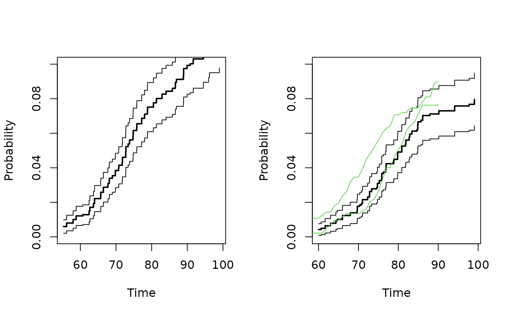

Estimates the bivariate cumulative incidence function (concordance) for paired
data (e.g., twins, family members) in the presence of competing risks. The function
handles both the IPCW (Inverse Probability of Censoring Weighting) estimator and
the Aalen-Johansen estimator (via prodlim).
Usage
bicomprisk(
formula,
data,
cause = c(1, 1),
cens = 0,
causes,
indiv,
strata = NULL,
id,
num,
max.clust = 1000,
marg = NULL,
se.clusters = NULL,
wname = NULL,
prodlim = FALSE,
messages = TRUE,
model,
return.data = 0,
uniform = 0,
conservative = 1,
resample.iid = 1,
...
)Arguments
- formula
Formula with an
Eventobject on the left-hand side. The right-hand side specifies the covariate structure, includingstrata()for grouping (e.g., MZ/DZ) andid()for pairing.- data
Data frame containing the variables.
- cause
Vector of cause codes for which to estimate the bivariate cumulative incidence (default
c(1,1)).- cens
Censoring code (default 0).
- causes
Vector of all possible causes (optional, inferred from data if missing).
- indiv
Variable indicating individual within a pair (optional, inferred from
id).- strata
Variable for stratification (optional, can be specified in formula).
- id
Clustering variable (pair ID). Required.
- num
Variable for numbering individuals within pairs (optional, auto-generated if missing).
- max.clust
Maximum number of clusters to use for IID decomposition in
timereg::comp.risk. If NULL, uses all clusters. Useful for large datasets to speed up computation.- marg
Optional marginal cumulative incidence object (from
comp.risk) to compute standard errors for same-cluster comparisons in subsequentcasewise.test().- se.clusters
Vector of cluster indices or column name in
datafor standard error calculation. Defaults to theidvariable.- wname
Name of an additional weight variable for paired competing risks data.
- prodlim
Logical; if TRUE, uses the
prodlim(Aalen-Johansen) estimator instead of the IPCW estimator based oncomp.risk. These are equivalent in the absence of covariates.- messages
Control amount of output (0 = silent, 1 = messages).
- model
Type of competing risk model for
comp.risk(default "fg" for Fine-Gray).- return.data
If 1, returns the reshaped data; if 2, returns only the data; otherwise returns the model.
- uniform
Logical; if TRUE, computes uniform standard errors based on resampling.
- conservative
Logical; if TRUE, uses conservative standard errors (recommended for large datasets).
- resample.iid
Logical; if TRUE, returns IID residual processes for further computations.
- ...
Additional arguments passed to
timereg::comp.risk.
Value
An object of class "bicomprisk" (or "bicomprisk.strata" if stratified) containing:
- model
List of fitted models for each stratum (or a single model).
- strata
Names of strata (if applicable).
- N
Number of strata (if applicable).
- time
Event times.
- P1
Bivariate cumulative incidence estimates.
- se.P1
Standard errors of the estimates.
- P1.iid
IID decomposition (if
resample.iid=TRUE).- clusters
Cluster assignments (if
margorse.clustersprovided).
Details
The concordance function \(C(t)\) is defined as the probability that both members of a pair experience the event of interest by time \(t\): $$ C(t) = P(T_1 \leq t, T_2 \leq t, \epsilon_1 = k, \epsilon_2 = k) $$ where \(T_i\) is the event time and \(\epsilon_i\) is the cause of failure for individual \(i\).
The function supports:
Stratified analysis (e.g., by zygosity in twin studies).
Clustering for robust standard errors.
Both IPCW and Aalen-Johansen estimation methods.
Resampling for uniform standard errors.
IID decomposition for further inference (e.g., casewise concordance tests).
References
Scheike, T. H.; Holst, K. K. & Hjelmborg, J. B. (2014). Estimating twin concordance for bivariate competing risks twin data. Statistics in Medicine, 33, 1193-1204.
Examples
library("timereg")
#> Loading required package: survival
#>
#> Attaching package: ‘timereg’
#> The following objects are masked from ‘package:mets’:
#>
#> Event, kmplot, plotConfregion
## Simulated data example
prt <- sim_nordic_random(2000,delayed=TRUE,ptrunc=0.7,
cordz=0.5,cormz=2,lam0=0.3)
## Bivariate competing risk, concordance estimates
p11 <- bicomprisk(Event(time,cause)~strata(zyg)+id(id),data=prt,cause=c(1,1))
#> Strata 'MZ'
#> Strata 'DZ'
p11mz <- p11$model$"MZ"
p11dz <- p11$model$"DZ"
par(mfrow=c(1,2))
## Concordance
plot(p11mz,ylim=c(0,0.1));
plot(p11dz,ylim=c(0,0.1));
## Entry time, truncation weighting
### Other weighting procedure
prtl <- prt[!prt$truncated,]
prt2 <- ipw2(prtl,cluster="id",same.cens=TRUE,
time="time",cause="cause",entrytime="entry",
pairs=TRUE,strata="zyg",obs.only=TRUE)
prt22 <- fast.reshape(prt2,id="id")
prt22$event <- (prt22$cause1==1)*(prt22$cause2==1)*1
prt22$timel <- pmax(prt22$time1,prt22$time2)
ipwc <- timereg::comp.risk(Event(timel,event)~-1+factor(zyg1),
data=prt22,cause=1,n.sim=0,model="rcif2",times=50:90,
weights=prt22$weights1,cens.weights=rep(1,nrow(prt22)))
p11wmz <- ipwc$cum[,2]
p11wdz <- ipwc$cum[,3]
lines(ipwc$cum[,1],p11wmz,col=3)
lines(ipwc$cum[,1],p11wdz,col=3)
